Here are the pictures I took for the image mosaic. I tried to fix the Center of Projection (COP) while making sure that there is significant overlap between the pictures.
Image Set 1:
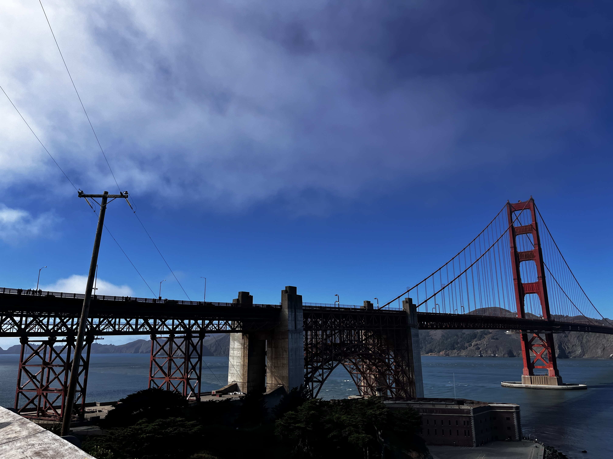
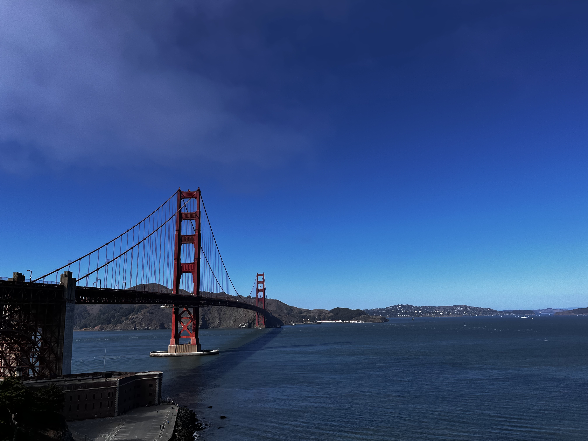
Golden Gate Bridge!
Image Set 2:
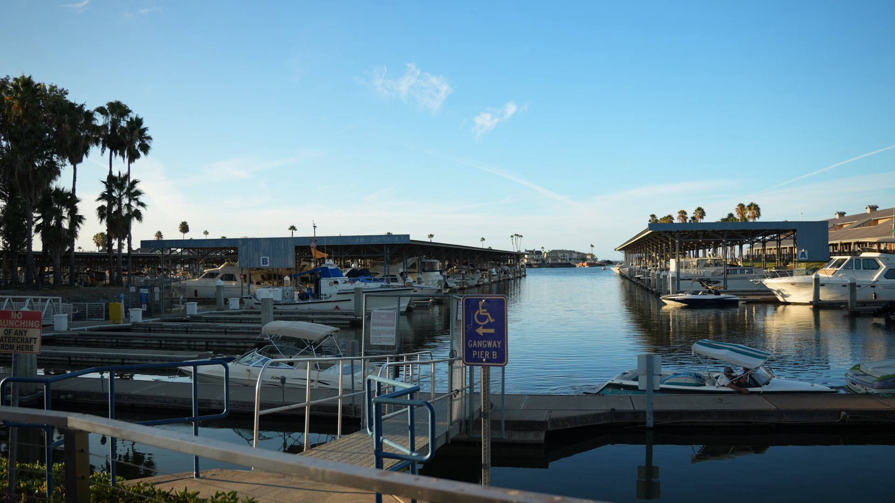
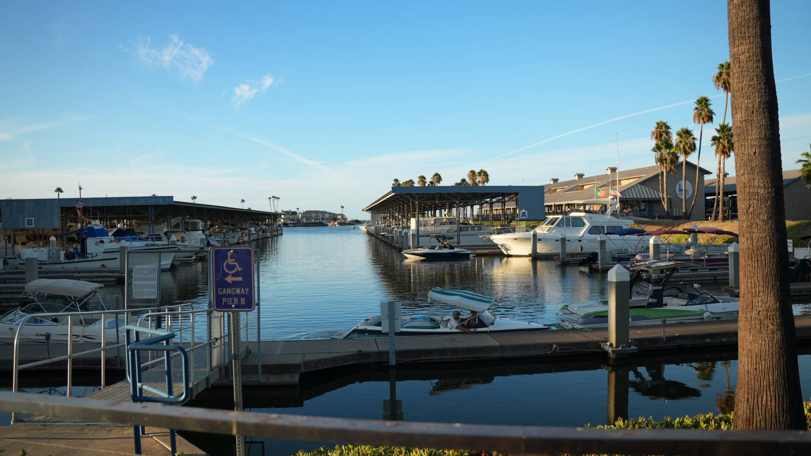
Harbor images I forgot where I got them from
Image Set 3:
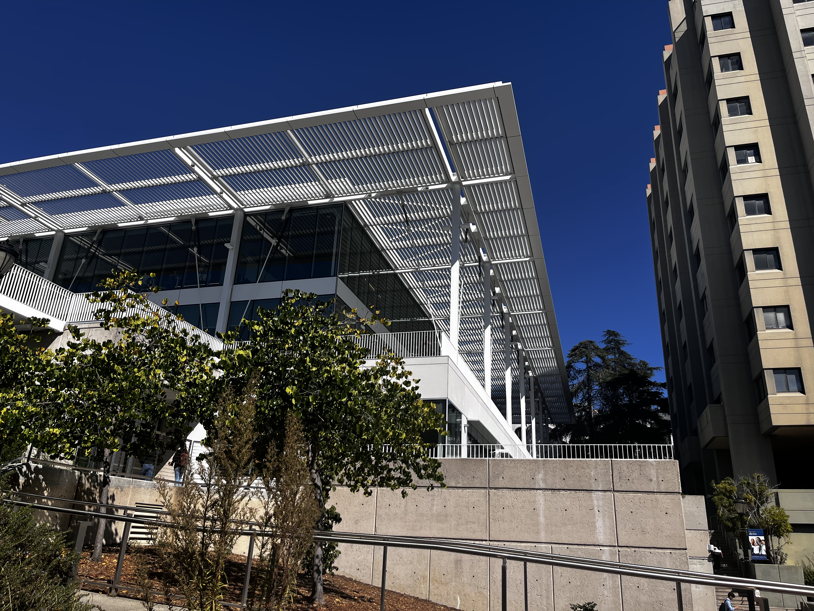
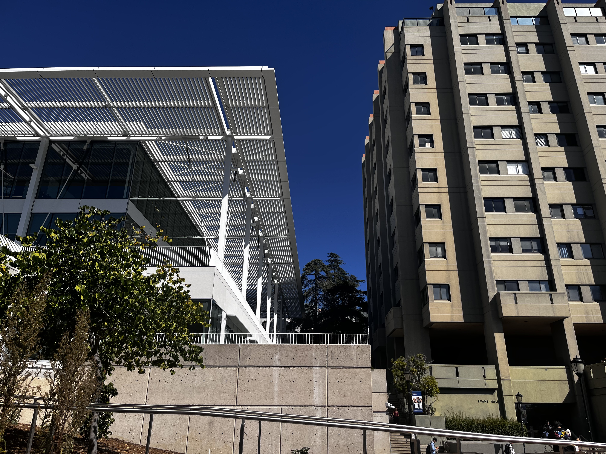
Pictures of our engineering library
Part A.2 — Recovering Homographies
A homography is a matrix that maps points from one image plane to another. This can be represented as:
p' = Hp
Where:
p = [x, y, 1] is a point in the first image (homogeneous coordinates)
p' = [x', y', 1] is the corresponding point in the second image
H is the 3×3 homography matrix with 8 degrees of freedom (9 entries, but we normalize so h₃₃ = 1)
H = [h11 h12 h13]
[h21 h22 h23]
[h31 h32 1 ]
When we multiply H by point p in homogeneous coordinates, we get:
To avoid holes in the output image, I used inverse warping. First, the four corners of the input image are transformed using the homography matrix H to determine their new positions in the output image. From these transformed corners, we compute a bounding box that ensures all warped pixels will fit within the output image dimensions.
Next, for each pixel in the output image, we compute its corresponding location in the input image by applying the inverse of the homography (H−1). This step allows us to determine which input pixels contributed to that output position.
Finally we sample the input image at that location using either Nearest Neighbor or Bilinear interpolation.
Implementation 1: Nearest Neighbor Interpolation
When the source coordinate falls between pixels (e.g., at x=10.3, y=5.7), we:
Round the coordinate to the nearest integer pixel location (e.g., (10, 6))
Directly use the color value of that single nearest pixel
Assign this value to the output pixel
Implementation 2: Bilinear Interpolation
When the source coordinate falls between pixels (e.g., at x=10.3, y=5.7), we:
Find the 4 surrounding pixels
Compute weights based on distance: closer pixels get higher weights
Take weighted average
Rectification Steps
Before creating full mosaics, I tested my computeH and warping code by rectifying images (taking photos of rectangular objects at an angle and making them rectangular).
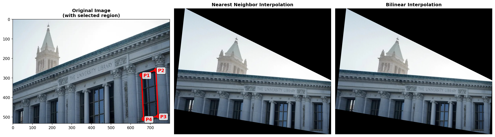
Doe Library Windows
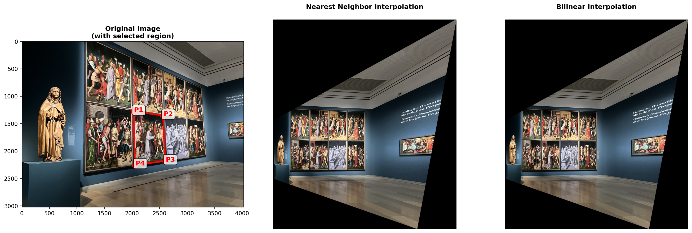
Art piece
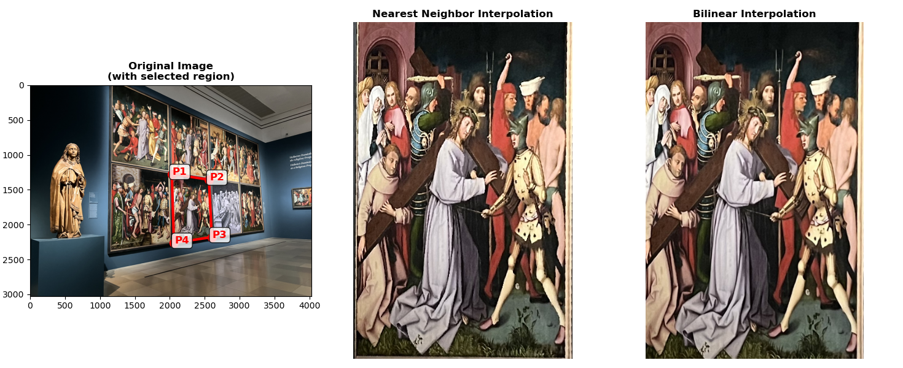
Art piece, zoomed in
Comparison between interpolation methods:
The bilinear interpolation produces smoother results with no visible pixelation, while the nearest neighbor method produced more jagged edges. However, nearest neighbor interpolation was more straightforward in terms of implementation, and its also a lot faster than bilinear interpolation due to less computations required.
Part A.4 — Creating Image Mosaics
Overview of Mosaicing Pipeline
Select correspondences: Pick matching points in overlapping regions
Compute homography: Calculate transformation from image 2 to image 1's frame
Determine canvas size: Find bounding box that fits both images
Warp image 2: Transform it into alignment with image 1
Blend images: Smoothly transition between them in overlap region
Blending: Centerline Gradient
This creates a smooth transition between two overlapping images by gradually adjusting their relative contributions across the overlap region. A sigmoid-based mask is used to blend from one image to the other, ensuring that pixels near the centerline receive an even mix. This approach minimizes visible seams when the input images have consistent lighting and exposure. I chose this simpler technique over the more complex Laplacian or Gaussian pyramid blending we've learnt the last project since our images already share similar brightness and color conditions, and the result mosaic pictures look decent.
Mosaic 1: Golden Gate Bridge Panorama
Pictures of Golden Gate Bridge I took over the weekends
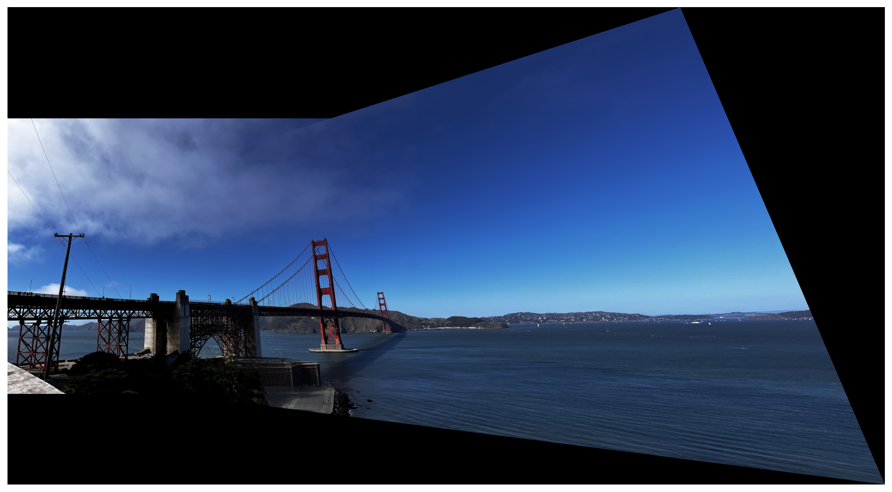
Final blended panorama.
Mosaic 2: Harbour Scene
Pictures of a harbour
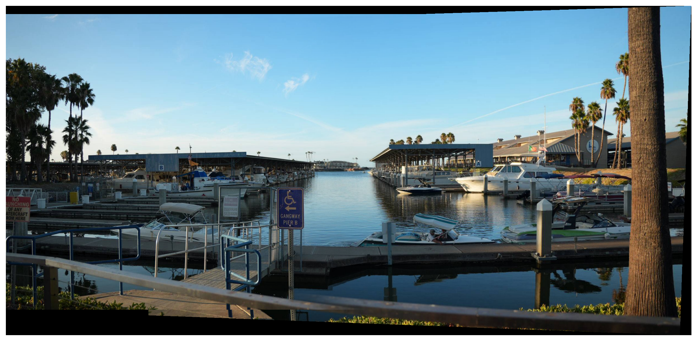
Final blended panorama
Mosaic 3: Engineering Building
Pictures of our engineering library
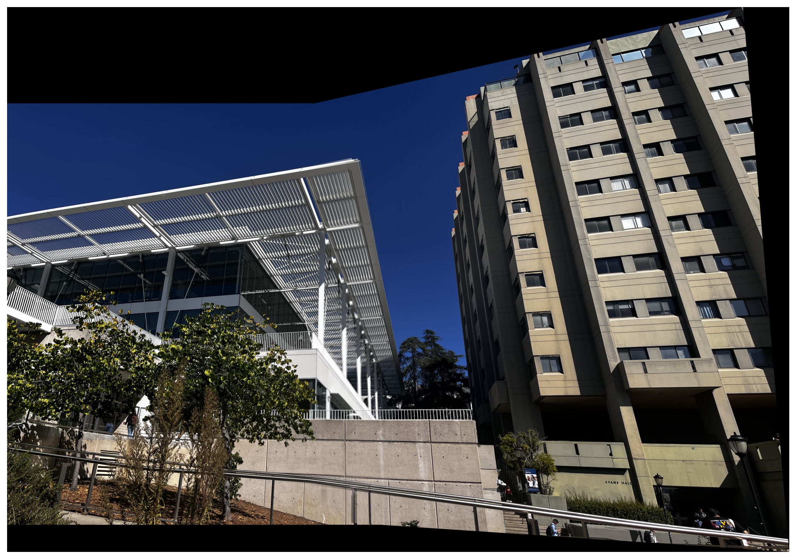
Final blended panorama
Part B — Automatic Feature Matching & Stitching
Part B.1 — Harris Corner Detection
Harris corner detection identifies locations in an image where there are significant changes in intensity in multiple directions. These corners are ideal for matching because they're distinct across different viewpoints.
How It Works
For each pixel, the algorithm:
Computes image gradients (how intensity changes in x and y directions)
Forms the Harris matrix from these gradients
Calculates a "corner strength" based on the eigenvalues of this matrix
Identifies local maxima as corner points
The corner strength function is: f = (λ₁λ₂)/(λ₁ + λ₂), where λ₁ and λ₂ are eigenvalues. High values in both directions indicate a corner.
Results: Raw Harris Corners
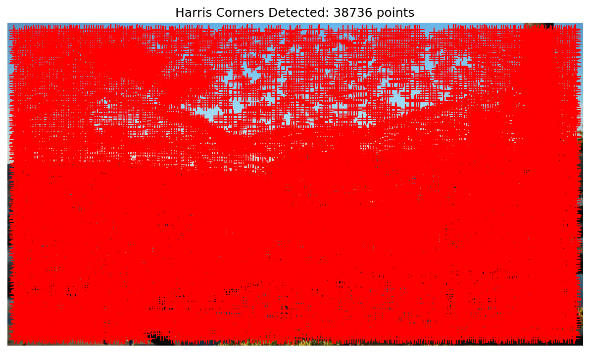
Left: Original Image | Right: All detected Harris corners
Adaptive Non-Maximal Suppression (ANMS)
However, the problem with Harris corners is that the points are clustered all over the place (as you can seen from the image above). For image stitching, we need well-distributed features across the entire image.
ANMS Solution: For each corner, compute its suppression radius (the distance to the nearest significantly stronger corner). Then select the corners with the largest suppression radius.
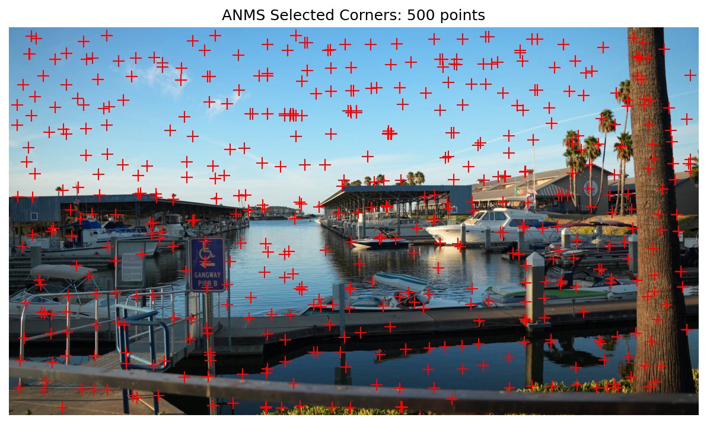
Left: All detected Harris corners | Right: 500 corners selected using ANMS.
Comparison
ANMS dramatically improves feature distribution. While raw Harris detection finds thousands of clustered corners, ANMS selects 500 well-distributed corners that cover the entire image, including regions with moderate corner strength.
Part B.2 — Feature Descriptor Extraction
A feature descriptor is a numerical representation of the local image appearance around each corner. It allows us to compare corners across different images and determine if they correspond to the same physical point.
Multi-Scale Oriented Patches (MOPS)
Following the paper, we extract simple yet effective descriptors:
Extract 40×40 window: Around each corner
Downsample to 8×8: Sample every 5th pixel for robustness to localisation errors
Normalise: Subtract mean and divide by standard deviation (makes descriptor invariant to lighting changes)
Sample features and their corresponding 8×8 descriptors
Part B.3 — Feature Matching
After finding the descriptors from two images, we have to determine which features correspond to each other. Just finding the nearest neighbor doesn't work well because the distributions of correct and incorrect matches overlap significantly. As suggested in the paper, we can instead use Lowe's Ratio Test.
Lowe's Ratio Test
For each feature in Image 1:
Find the 1st nearest neighbor (1-NN) in Image 2 with distance d1
Find the 2nd nearest neighbor (2-NN) with distance d2
Compute ratio: r = d1 / d2
Accept match only if r <= 0.8 (threshold in paper)
Correct matches are distinctive since the best match is much better than the second-best (lower ratio).
Matched Features
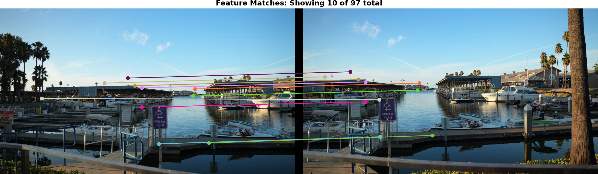
Matched features between image pairs using ratio test with threshold 0.8
Part B.4 — RANSAC for Robust Homography
However, even with the ratio test, some incorrect matches (outliers) remain (as you can see from the purple colored match on top and blue colored match below in the previous image). If we compute the homography using all matches, these will interfere with the result.
RANSAC (Random Sample Consensus)
RANSAC is an algorithm that fits a model to data containing outliers:
Randomly select 4 matches
Compute homography H from these 4 points
For all matches, compute reprojection error using H
Matches with error <= threshold (5 pixels) are inliers
Try 5000 different random samples
Select H with most inliers
Recompute H using all inliers
If we randomly sample 4 matches, and most matches are correct, we'll likely get 4 correct matches. These will produce a good homography that many other correct matches will agree with. In comparison, bad samples (containing outliers) produce poor homographies that few matches agree with.
RANSAC Results
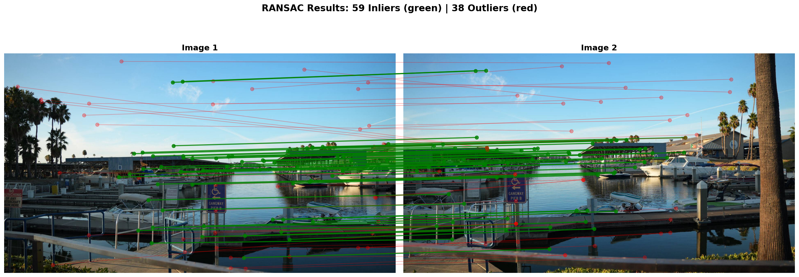
Green lines: Inliers. Red lines: Outliers.
Automatic Mosaics
Using the homography from RANSAC inliers, we can now automatically stitch images.